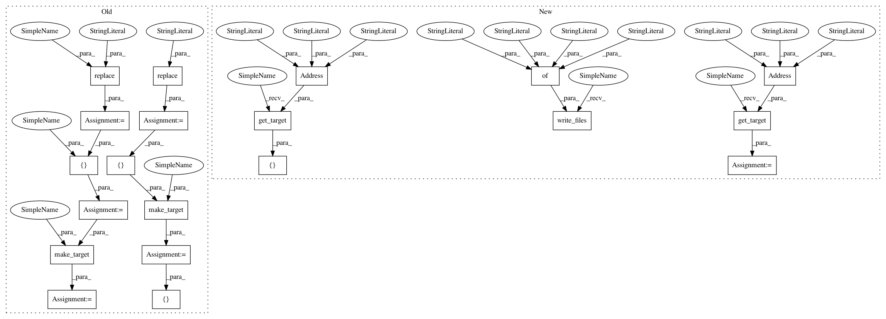

3222b9728d9f07cbce611ba6c57ef0d640d033a6,src/python/pants/backend/python/lint/black/rules_integration_test.py,,test_stub_files,#Any#,254
Before Change
def test_stub_files(rule_runner: RuleRunner) -> None:
good_stub = dataclasses.replace(GOOD_SOURCE, path="good.pyi")
bad_stub = dataclasses.replace(BAD_SOURCE, path="bad.pyi")
fixed_bad_stub = dataclasses.replace(FIXED_BAD_SOURCE, path="bad.pyi")
good_files = [GOOD_SOURCE, good_stub]
target = make_target(rule_runner, good_files)
lint_results, fmt_result = run_black(rule_runner, [target])
assert len(lint_results) == 1 and lint_results[0].exit_code == 0
assert (
"2 files would be left unchanged" in lint_results[0].stderr
and "2 files left unchanged" in fmt_result.stderr
)
assert fmt_result.output == get_digest(rule_runner, good_files)
assert not fmt_result.did_change
target = make_target(rule_runner, [BAD_SOURCE, bad_stub], name="failing_target")
lint_results, fmt_result = run_black(rule_runner, [target])
assert len(lint_results) == 1 and lint_results[0].exit_code == 1
assert (
"2 files would be reformatted" in lint_results[0].stderr
After Change
def test_stub_files(rule_runner: RuleRunner) -> None:
rule_runner.write_files(
{
"good.pyi": GOOD_FILE,
"good.py": GOOD_FILE,
"bad.pyi": BAD_FILE,
"bad.py": BAD_FILE,
"BUILD": "python_library(name="t")",
}
)
good_tgts = [
rule_runner.get_target(Address("", target_name="t", relative_file_path="good.pyi")),
rule_runner.get_target(Address("", target_name="t", relative_file_path="good.py")),
]
lint_results, fmt_result = run_black(rule_runner, good_tgts)
assert len(lint_results) == 1 and lint_results[0].exit_code == 0
assert (
"2 files would be left unchanged" in lint_results[0].stderr
and "2 files left unchanged" in fmt_result.stderr
)
assert fmt_result.output == get_digest(
rule_runner, {"good.pyi": GOOD_FILE, "good.py": GOOD_FILE}
)
assert not fmt_result.did_change
bad_tgts = [
rule_runner.get_target(Address("", target_name="t", relative_file_path="bad.pyi")),
rule_runner.get_target(Address("", target_name="t", relative_file_path="bad.py")),
]
lint_results, fmt_result = run_black(rule_runner, bad_tgts)
assert len(lint_results) == 1 and lint_results[0].exit_code == 1
assert (
"2 files would be reformatted" in lint_results[0].stderr
In pattern: SUPERPATTERN
Frequency: 3
Non-data size: 20
Instances
Project Name: pantsbuild/pants
Commit Name: 3222b9728d9f07cbce611ba6c57ef0d640d033a6
Time: 2021-04-05
Author: 14852634+Eric-Arellano@users.noreply.github.com
File Name: src/python/pants/backend/python/lint/black/rules_integration_test.py
Class Name:
Method Name: test_stub_files
Project Name: pantsbuild/pants
Commit Name: 3222b9728d9f07cbce611ba6c57ef0d640d033a6
Time: 2021-04-05
Author: 14852634+Eric-Arellano@users.noreply.github.com
File Name: src/python/pants/backend/python/lint/docformatter/rules_integration_test.py
Class Name:
Method Name: test_stub_files
Project Name: pantsbuild/pants
Commit Name: 3222b9728d9f07cbce611ba6c57ef0d640d033a6
Time: 2021-04-05
Author: 14852634+Eric-Arellano@users.noreply.github.com
File Name: src/python/pants/backend/python/lint/black/rules_integration_test.py
Class Name:
Method Name: test_stub_files
Project Name: pantsbuild/pants
Commit Name: 3222b9728d9f07cbce611ba6c57ef0d640d033a6
Time: 2021-04-05
Author: 14852634+Eric-Arellano@users.noreply.github.com
File Name: src/python/pants/backend/python/lint/isort/rules_integration_test.py
Class Name:
Method Name: test_stub_files